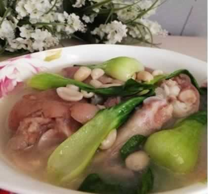
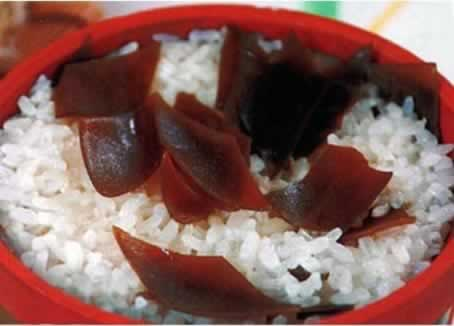

有效对抗妊娠纹的食物
许多妈妈可能在孕中后期都会出现妊娠纹（指准妈妈怀孕期间出现在下腹部、大腿、臀部或胸部，呈现紫色或是粉红色的条纹，属妊娠期生理性变化，无需治疗），于是自孕早期起，诸多爱美的妈妈们就开始通过按摩等方法预防妊娠纹了。其实，通过饮食也可以增加皮肤弹性，从而预防与缓解孕期妊娠纹。那么，都有哪些食物可以有效地预防妊娠纹呢？
1、西红柿：西红柿具有保养皮肤功效，有预防妊娠纹的功效。因为番茄中含有丰富的番茄红素，而番茄红素的抗氧化能力是维生素C的20倍，可以说是抗氧化预防妊娠纹的“超强武器”，能够帮助准妈妈有效缓解妊娠纹。
2、西兰花：西兰花中含有丰富的维生素A、维生素C和胡萝卜素，能增强皮肤的抗损伤能力、这将有助于保持皮肤弹性，可以使准妈妈远离妊娠纹的困扰。丰富的维生素C不但能增强准妈妈免疫力，保证胎宝宝不受病菌感染，还能增强皮肤弹性。
3、猕猴桃：猕猴桃被誉为“水果金矿”，含有丰富的食物纤维、维生素C、维生素B、维生素D、钙、磷、钾等微量元素和矿物质。其中的维生素C能有效地抑制皮肤内多巴醌的氧化作用，使皮肤中深色氧化型色素转化为还原型浅色素，干扰黑色素的形成，预防色素沉淀，保持皮肤白皙，可以有效对抗准妈妈妊娠纹。
4、三文鱼：三文鱼肉及其鱼皮中富含的胶原蛋白是皮肤最好的“营养品”。大量的胶原蛋白，能减慢机体细胞老化，使准妈妈皮肤丰润饱满，富有弹性，远离妊娠纹的困扰。
5、猪蹄：猪蹄含有较多的蛋白质、脂肪碳水化合物，以及钙、磷、镁、铁、维生素A、D、E、K等成份。不仅如此，蹄皮、蹄筋中还含有丰富的胶原蛋白质，可以有效对付妊娠纹，还能增强皮肤弹性和韧性。
6、海带：海带中含有丰富的矿物质，常吃能够调节血液中的酸碱度，防止皮肤过多分泌油脂；海带还含有丰富的胡萝卜素、维生素B1等维生素，可以有效防止皮肤老化，有效缓解妊娠纹。
7、黄豆：黄豆中所富含的维生素E能够破坏自由基的化学活性，不仅能抑制皮肤衰老，更能增加皮肤弹性，防止色素沉着于皮肤。常食黄豆，可以使皮肤细敕、白皙、润泽，有效防止妊娠纹。
本周推荐尝试食谱1：
花生蹄花汤
推荐理由：此菜的蛋白质和脂肪含量高，能补脾益气，补肾健体，滋补养颜。
食谱原料：
猪蹄500克，花生米200克，老姜30克，精盐、葱、胡椒粉各适量。
制作方法：
1、将猪蹄去毛，用清水略为浸泡并刮洗干净。
2、将净猪蹄对剖后剁成小块。
3、花生米在温水中浸泡去皮。葱切花、姜拍松。油菜择洗干净。
4、锅置旺火上，加入适量清水，放入猪蹄，煮沸后撇去浮沫，放入花生米和老姜块；猪蹄半熟时，改用小火，加入精盐、油菜继续煨炖，待猪蹄熟烂入味后，起锅盛入汤碗，撒上胡椒粉、葱花即可。
本周推荐尝试食谱1：
海带焖饭
推荐理由：海带含碘、钙丰富，孕妇食用可补充碘、钙的摄入，有利胎儿的生长。
食谱原料：
大米500克，水发海带100克，水500克，盐10克。
制作方法：
1、将大米拣去杂物，淘洗干净；海带放入凉水盆中洗净泥沙，切成小块。
2、锅置火上，放入海带块和水，旺火烧开，滚煮5分钟，煮出滋味，随即放入大米和盐，再开后，不断翻搅，烧10分钟左右，待米粒涨发，水快干时，盖上锅盖，用小火焖10-15分钟即熟。